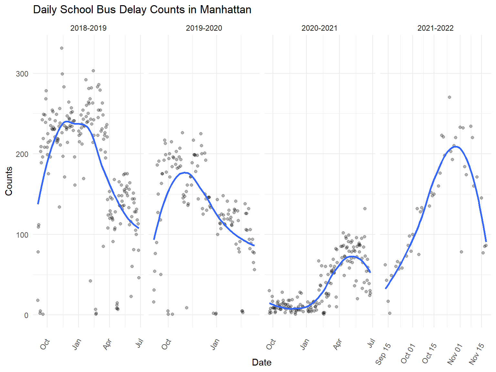

On this page we will give you a bird-eye-view of school bus delay in Manhattan from 2018 Fall to 2021 Fall. We aims to explore the trends of the school bus delay occurrence and delay time over the school years. The time period we chose includes both pre and post covid data which will be interesting to look at ! Now lets dive right into it!
First,we would like to get a general view of the frequency of school bus delay in Manhattan from the fall semester 2018 to most recently. As we can see from the plot below, Covid-19 has a huge impact on the school bus delay over the time. Before the pandemic(2018-2020), we can see that the school buses are more likely to delay in the fall semester than the spring semesters especially during December and January. This may be caused by extreme weather in the winter and the heavy traffic during holiday seasons.In 2020-2021 when most schools switched online to cope with the pandemic , we can see there is striking low school bus delay. This is not hard to understand given there are less school bus route running and less cars on streets due to lock down and social distancing. In the fall of 2021, schools are switching back to in-person mode with the effort of vaccine enforcement and all other precautions taken, the school bus delay has a similar distribution as the pre-pandemic distribution.
#read data in
df = read_csv("data/clean_data.csv")
#plot data: drop NA rows
plot_df = df %>%
select(school_year, year, how_long_delayed,occur_date, day, month,busbreakdown_id) %>%
na.omit()
#plot daily delay counts
plot_df %>%
group_by(occur_date) %>%
summarise(delay_count = n(),school_year) %>%
distinct() %>%
ggplot(aes(x = occur_date, y = delay_count)) +
geom_point(alpha = .3) +
geom_smooth(se = FALSE) +
facet_grid(~school_year,scales = "free") +
labs(
title = "Daily School Bus Delay Counts in Manhattan",
x = "Date",
y = "Counts"
) +
theme(axis.text.x = element_text(angle = 60, vjust = 0.5, hjust = 1))
Now we want to take a closer look at the counts of school bus delay in each month and compare the school years over 2018 to 2021.
First we can see that except for the 2020-2021 school year , we have a similar trend for school bus delay distribution from January to December. The school bus delay is more frequent in the winter from November to the Next February. The frequency of school bus delay is decreasing in number over the years. We are happy tp see that the NY school bus system is improving on the overall level. The school bus system is probability shut down or has limited routes operating given the lock down in 2020-2021. There is less than 100 delays each month in those days.
#overlaping each year's daily delay counts
overlaping_plot =
plot_df %>%
group_by(occur_date) %>%
mutate(delay_count = n(),
day_of_month = lubridate::mday(occur_date),
common_day = lubridate::mdy(paste(month, day_of_month,"2021"))) %>%
mutate(
month = forcats::fct_relevel(as.factor(month), "September", "October", "November", "December", "January", "February", "March", "April", "May", "June")
) %>%
select(occur_date, month, common_day, delay_count, school_year) %>%
distinct() %>%
ggplot(aes(x = common_day, y = delay_count, group = school_year, color = school_year)) +
geom_point(alpha = .3) +
geom_smooth(se = FALSE) +
labs(
title = "School Bus Delay in Manhattan",
x = "Month",
y = "Delay Counts"
) +
scale_x_date(date_breaks = "1 month", labels = function(x) format(x, "%b"))+ guides(fill=guide_legend(title="School Year"))
ggplotly(overlaping_plot)Except for the frequency of school bus delay, students like us also care about the delay time of the school bus. Surprisingly, we see that the most majority delays take about 31 - 45 minuets before the pandemic.Though we have lower frequency of bus delay after the pandemic, the majority of the bus delay takes about 46-60 minuets. For Student, this might not be as bad as it looks.The overall probability of being late due to school bus delay should decrease, though they may be late for a longer period of time given each delay they run into.
delay_time_dist =
plot_df %>%
ggplot(aes(x = how_long_delayed,fill = how_long_delayed))+
geom_bar(position = "dodge")+
facet_grid(~school_year,scales = "free") +
labs(
title = "Distribution of School Bus Delay Time in Manhattan",
x = "Delay Time",
y = "Counts"
)+
theme(axis.title.x = element_blank(),axis.text.x = element_text(angle = 60, vjust = 0.5, hjust = 0.5)) +
guides(fill=guide_legend(title="Delay Time"))
ggplotly(delay_time_dist)lets now overlap the school bus delay counts within each school year
In the fourth plot, we tried to figure out whether there would be a monthly rule for each type of school bus delay. We need to analyze the school bus delay type by type. Overall, 31-45-minute school bus delays and 46-60-minute school bus delays make up the majority part of the total number of school bus delays. For all kinds of school bus delays in the three academic years, the number of delays increases from September to October for all the three academic years. Then, after October, the number of school bus delay decreased first and then kept fluctuating for all types of school bus delays. All kinds of school bus delays will reach the second peak in either January or February. The 0-15-minute delay, 16-30-minute delay, and 31-45-minute delay are more frequent than usual in May. 31-45-minute delay and 46-60-minute delay are more frequent than usual in March. Thus, October, January, February, March, and May are more probable to encounter school bus delays than else months in a year.
df_date_weather_na =
df %>%
drop_na(how_long_delayed) %>%
mutate(
month = forcats::fct_relevel(as.factor(month), "September", "October", "November", "December", "January", "February", "March", "April", "May", "June"),
day = forcats::fct_relevel(as.factor(day), "Monday", "Tuesday", "Wednesday", "Thursday", "Friday")
) %>%
filter(!(school_year == "2021-2022"))
df_date_weather_plot =
df_date_weather_na %>%
group_by(month, how_long_delayed, school_year) %>%
summarize(n_obs = n()) %>%
mutate(how_long_delayed = forcats::fct_relevel(as.factor(how_long_delayed), "0-15 Min", "16-30 Min", "31-45 Min", "46-60 Min", "61-90 Min")
)
p1 = ggplot(df_date_weather_plot, aes(x = month, y = n_obs)) +
geom_col(alpha = 0.6) +
facet_grid(~how_long_delayed) +
geom_line(aes(group = school_year, color = school_year)) +
labs(
x = "month",
y = "counts",
title = "the monthly distribution for different length of time"
) +
theme(axis.text.x = element_text(angle = 90, vjust = 0.5, hjust = 1))
ggplotly(p1)In the fifth plot, we are curious about if there is any rule related to bus delay in each week. We tried to figure out which weekday will be more probable to encounter a bus delay and generally how long the delay will be. According to the result, there isn’t any rule about that. Encountering a school bus delay is almost equivalently frequent in each school day. In 2018-2019 academic year and 2019-2020 academic year, the three most frequent types of school bus delays are 31-45 minutes, 46-60 minutes, and 16-30 minutes in turn. In 2020-2021 academic year, the three most frequent types of school bus delays are 46-60 minutes, 31-45 minutes, and 16-30 minutes in turn.
df_date_weather_plot2 =
df_date_weather_na %>%
group_by(day, school_year, how_long_delayed) %>%
summarize(n_obs = n())
p2 = ggplot(df_date_weather_plot2, aes(x = day, y = n_obs)) +
geom_col(alpha = 0.6) +
facet_grid(~school_year) +
labs(
x = "weekday",
y = "counts",
title = "the daily distribution for different length of time"
) +
geom_line(aes(group = how_long_delayed, color = how_long_delayed)) +
theme(axis.text.x = element_text(angle = 90, vjust = 0.5, hjust = 1))
ggplotly(p2)